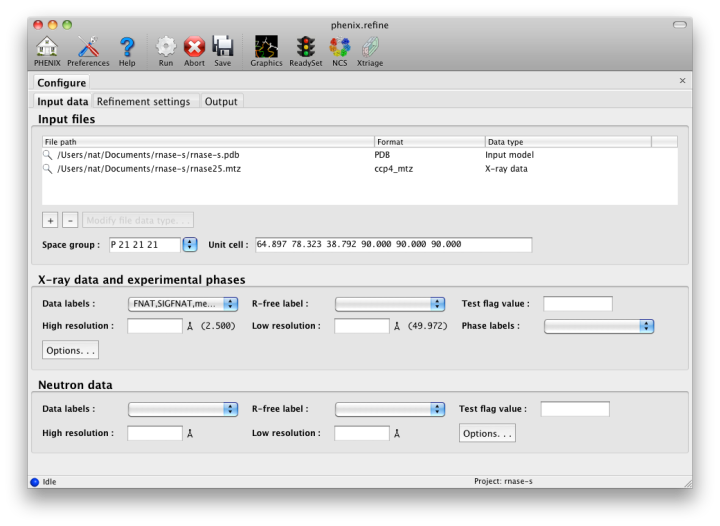
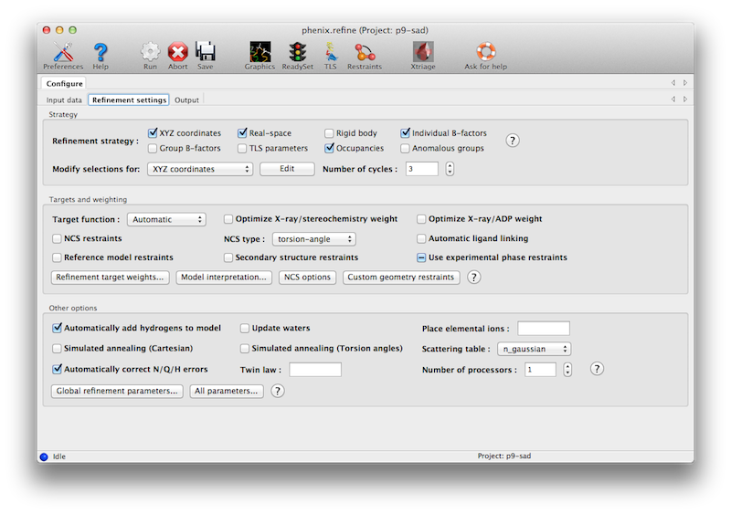
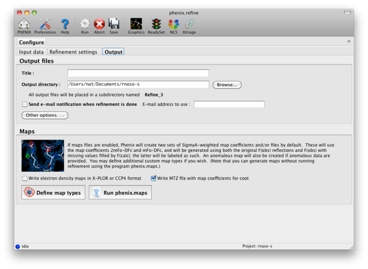
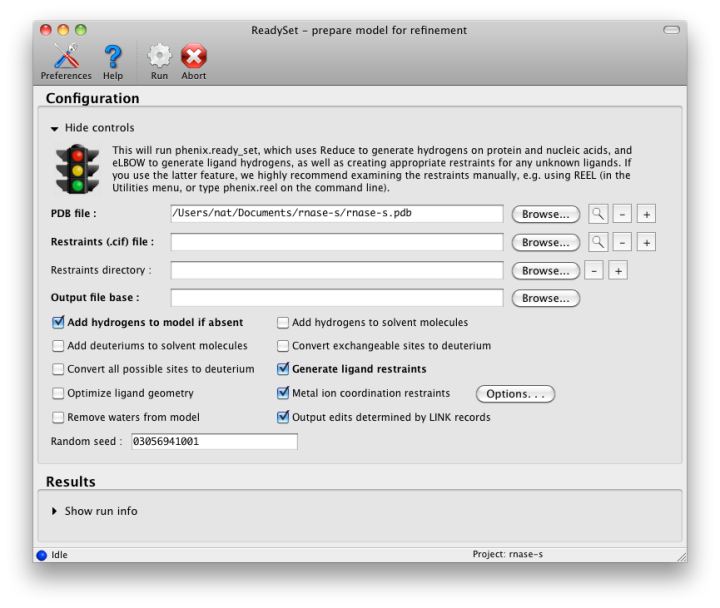
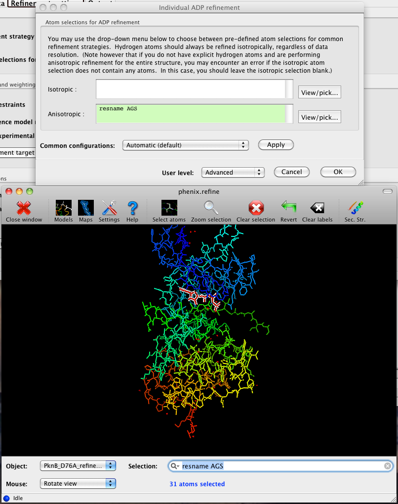
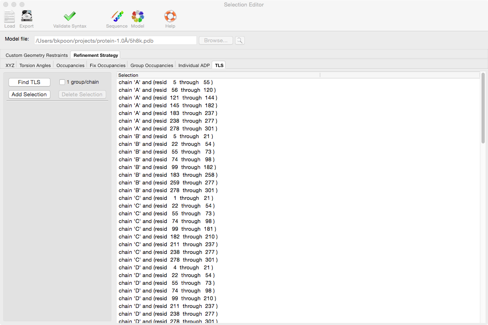
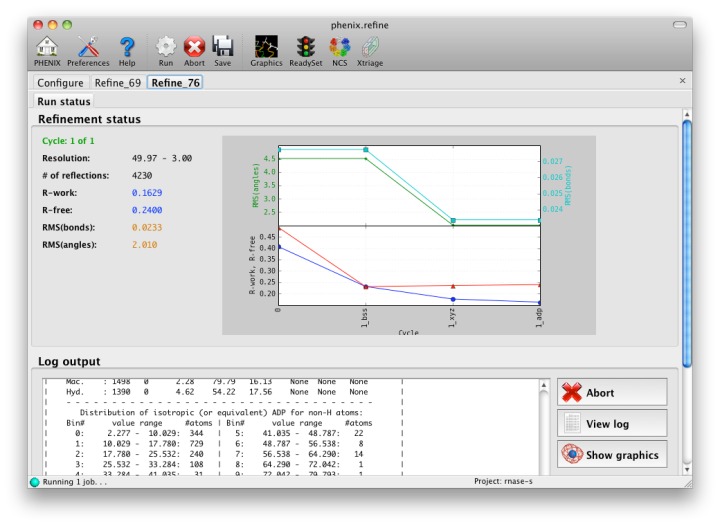
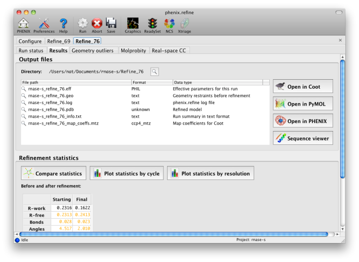

The graphical interface for phenix.refine runs the unmodified command-line version; default settings are unchanged. All parameters should be configurable through the GUI, although some of these (such as NCS restraint groups) are handled in a non-standard way. This document describes the behavior of the GUI only; see the phenix.refine documentation for details on specific parameters and methods. There is also a list of frequently asked questions about phenix.refine.
At present the GUI has the following capabilities in addition to the features included in phenix.refine:
- automatic extraction of parameters from PDB and reflection files
- detection of unknown ligands, and generation of restraint files
- graphical mirroring and picking of any atom selection
- project-specific default settings and restraints
- NCS restraint group detection and editing tool
- TLS group detection and editing tool
- real-time visualization of current model and maps during refinement
- model validation using programs from the MolProbity server
- graphical comparison of structure quality measures
- printable plots of final statistics
The tutorial video is available on the Phenix YouTube channel and covers the following topics:
Because phenix.refine currently has nearly 500 distinct parameters, many of which rarely need changing, and the window controls are mostly created automatically, advanced settings are hidden by default. The "user level" may be set within each window, or set globally in the Preferences. The most important parameters (input and output files, strategy, additional procedures such as solvent updating and simulated annealing) are shown in the main window.
The first tab contains settings for input files, which can be added by clicking the "+" button below the file list, or by dragging files into the list control and releasing the mouse button. Up to five different reflection files may be used (X-ray data, X-ray R-free flags, neutron data, neutron R-free flags, and experimental phases), but in most cases all data will be in a single file. Any number of PDB files for the starting model may be added; these will be combined internally. You may also specify a reference model for additional restraints (see below). Other supported file formats are CIF (restraint) files for non-standard ligands, and phenix.refine parameter files.

The GUI will attempt to guess the purpose of PDB and X-ray files, but you may change this by right-clicking on the "Data type" field associated with the file and selecting an option from a drop-down menu, or select the file and click the button labeled "Modify file data type".
If your reflection and/or PDB files have the appropriate information on crystal symmetry and data labels, these parameters will be extracted automatically. Appropriate column labels for reflection files will also be added to the drop-down menus; by default, anomalous intensities (I+/I-) will be used if present, but you may also use merged data and/or amplitudes. The R-free flags are optional, since phenix.refine will add them automatically if none are present, but once flags have been used in refinement (including the automated building in AutoSol or AutoBuild) the same set should always be used.
The second tab contains options for the refinement protocol. Many of these controls will open additional dialog windows in response to mouse clicks or file selection. In many cases, you can open these windows on demand by right-clicking on the appropriate control (for instance, right-clicking the "Rigid body" strategy button will show the atom selection controls for defining rigid groups). All other parameters can be found in the Settings menu.

Most of the refinement options presented on this tab essentially fall into three categories:
- Model parameterization. This determines which properties of the model will be refined, and how they are grouped. Options include coordinate refinement (individually against reciprocal-space data or real-space maps; or as rigid-body groups against reciprocal-space data); B-factor or ADP (atomic displacement parameter) refinement, with several options for grouping and isotropic versus anisotropic; atomic occupancies (i.e. the fraction of the time the atom is present in the refined position in the crystal); and anomalous groups.
- Optimization target. This defines the function to be minimized; by default this is at least the agreement of the model amplitudes with the experimentally measured amplitudes. For almost all macromolecular structures restraints on covalent geometry and the B-factors of nearby atoms will also be necessary, and a variety of customizations of the geometry restraints are possible.
- Optimization method. The standard optimization method used in phenix.refine and similar programs is gradient-driven minimization, but other options are available. These often have a significantly wider radius of convergence, but at the cost of increased runtime.
The default options have been chosen to work well for partially refined structures at moderate resolutions, which comprise the majority of structures in the Protein Data Bank. However, at significantly higher or lower resolution, or for structures at the early or final stages of refinement, additional options may be necessary or beneficial.
The first set of controls determines the parameterization of the model and the attributes to be refined. By default, the Individual Sites, Individual ADPs (B-factors), and Occupancies strategies are selected, since these are usually appropriate at a wide range of resolutions and refinement stages. All strategies have associated atom selections which control what parts of the model are refined. A brief summary follows; note that the resolution limits specified are approximate only, and in practice may vary widely depending on model quality, data quality, and observation-to-parameters ratio.
- XYZ coordinates is standard Cartesian refinement of model geometry and agreement with X-ray data. It is almost always appropriate, but at low-resolution (typically 3.0A or worse), additional restraints (NCS, reference model, etc.) are often necessary to prevent overfitting.
- Real-space also refines the atomic-positions, but uses the electron density map as target instead of F(obs). It will be run both locally (to fit individual residues with poor density or rotamer outliers) and globally. This is generally most helpful early in refinement for moderate- to high-resolution structures; at worse than 3Å the effectiveness falls off rapidly.
- Rigid-body refines the position of large, user-defined regions of the model without changing geometry. It is typically used immediately after molecular replacement, when the R-factors are usually very high, and at very low resolutions (4.5A or worse). If both rigid-body and individual sites refinement are checked (recommended), the rigid-body step will be done first, in the first cycle of refinement.
- Individual B-factors is restrained atomic B-factor refinement, and is usually appropriate except at very low resolution (there is some debate about what the cutoff should be, but we generally find the vast majority of structures in the PDB refine well with this option). Whether atoms are treated as isotropic or anisotropic is defined separately (see below).
- Group B-factors refines B-factors for multiple atoms at a time, most often single residues either as a whole or divided into mainchain and sidechain. (Larger user-defined groups are also allowed.) This is usually only necessary at very low resolution. Note that there are no restraints to keep the B-factors for adjacent groups similar!
- TLS parameters refines anisotropic displacements for large groups of atoms, typically individual domains or chains. Because this introduces only ten parameters for each group, and relatively few groups are used, it is appropriate at almost any resolution unless individual anisotropic B-factors are refined. (See note about B-factors below.) It is important to provide accurate atom selections here; the TLSMD server may be helpful in determining these automatically.
- Occupancies refines atomic occupancies. This is appropriate at high resolution (usually 1.7A or better) where alternate conformations are often present, and in situations where a ligand, ion, or solvent atom is not bound in every unit cell. By default, it will only be performed for atoms with partial occupancies, so it is safe to leave this on even if you have no partial-ocupancy atoms. Groupings are determined automatically if possible, but you may specify them manually. (This is especially important if you have complex relationships betweeen alternate conformations in different parts of the model.)
- Anomalous groups refines the anomalous coefficients f' and f'' for anomalously scattering atoms such as Se or heavy metals; it is only appropriate if you have anomalous data (I+/I- or F+/F-). This usually has minimal impact on R-factors, but can sometimes remove difference map peaks, and may be useful in conjunction with an anomalous residual or LLG map (which shows the location of unmodeled anomalous scatterers).
The refinement protocol can be further modified by manipulating various refinement targets, including restraints (structural and otherwise):
- Target function describes the calculation of model-based X-ray terms; "ML" means "Maximum likelihood" and is usually appropriate; "MLHL" use used when experimental phase restraints are added; "ML-SAD" is not suitable for general use. The least-squares (LS) target is only useful for twinned refinement or very small datasets (it will be used automatically if necessary).
- Weight optimization uses a grid search to determine the best relative weight for the X-ray target function and the geometry or B-factor restraints. At atomic resolution this is rarely necessary, but it will be very helpful at low resolution, and we recommend always enabling these options for at least the final round of refinement before the model is deposited. If you find that the structure is being overfit or the geometry is especially poor, optimizing the X-ray/stereochemistry weight will often fix the problem.
- NCS restraints preserve non-crystallographic symmetry between identical copies of a molecule. If NCS is present in the crystal, these restraints are usually appropriate at intermediate resolution (2.0-2.7A or worse) and essential at lower resolutions. NCS restraints are available in either torsion-angle or Cartesian parameterization: the former allows the molecules to be flexible while preserving local conformation, while the latter essentially treats NCS-related group as rigid relative to each other. This may be beneficial in some cases, but the torsion-angle restraints are the safest and easiest to use. Phenix will automatically identify appropriate NCS groups for you, and if you are using the torsion-angle version it is very rare that you will need to assign groups manually. Both implementations also allow you to restrain the B-factors of NCS groups to be similar, but this is not always useful or even valid.
- Automatic covalent bonds supplement the standard covalent geometry restraints for special cases such as modified amino acids, glycoproteins, and metal ions. This is usually a safe option as long as you do not have excessive errors in the input geometry, which may lead to spurious links being created. Note that you can also define custom geometry restraints yourself, and/or use ReadySet to generate them for you.
- Reference model restraints use the dihedral angles of an existing structure as restraints on the input model conformation, for instance, refining a low-resolution structure of a molecule whose high-resolution structure is available. This is most useful at low resolutions (usually worse than 3.0A).
- Secondary structure restraints add distance restraints for hydrogen bonds in alpha helices, beta sheets, and Watson-Crick base pairs. These are helpful for maintaining correct geometry at lower resolutions (2.5A or worse). Suitable atom selections will be detected automatically but you may also specify them manually.
- Use experimental phases uses the experimental phase distributions (Hendrickson-Lattman coefficients) from phasing programs such as AutoSol as part of the refinement target function. This is usually helpful if these phases are available, but only if the same data were used for both phasing and refinement.
Several other options are available for the types of optimization used; these typically apply globally, except as noted.
- Automatically add hydrogens to model runs phenix.ready_set to add hydrogen atoms (or deuteriums, if performing neutron crystallography) where appropriate. This usually only affects the R-factors at high resolution, but can be very helpful for improving geometry at any resolution. We recommend using explicit hydrogens on protein, nucleic acid, and ligand molecules throughout refinement. (We do not reocmmend adding hydrogens to waters unless you have exceptionally high resolution.) Hydrogen atoms will still be defined using the "riding" model unless otherwise requested, so they do not add parameters during refinement. (Note that this option can be left on if you already have hydrogen atoms in place and are refining as "riding"; if you are refining against neutron data and/or allowing hydrogen atoms to refine individually, you should uncheck the box, as it will otherwise replace the existing atoms.)
- Update waters automatically adds and removes solvent atoms as necessary; this is usually appropriate at any resolution where water molecules are visible in density (usually 2.5A or better).
- Ion placement extends solvent picking to build elemental ions such as calcium and zinc. To enable this option, simply enter a list of the elements to search for; this will also enable solvent picking as a first step. This option is not recommended if you have data worse than 3.0A resolution, and works best with anomalous data.
- Simulated annealing uses molecular dynamics with an extra X-ray term as an additional optimization method. It is very helpful for removing phase bias and overcoming energy barriers, and often yields a significant improvement over simple minimization early in refinement. The main disadvantage is speed. Two types of parameterization are available, Cartesian and torsion angles; the latter is more suitable for low resolution.
- Scattering table determines how atomic scattering is modeled; this is almost always either "n_gaussian" for standard X-ray refinement, or "neutron" (see below).
- Automatically correct N/Q/H errors uses the program Reduce to flip backwards sidechains, which appear symmetric when explicit hydrogens are not present. This is almost always a good idea and adds very little to overall run time.
- Twin law enables twinned refinement. Only a single twin domain is supported at present, and the refinement target is least-squares (LS) instead of maximum-likelihood. We recommend caution when using this option, as the R-factors are invariably lower whether or not the crystal was actually twinned, and the detwinned maps will have more model bias.
- Number of processors determines the parallelization for several optional steps, most importantly the weight optimization where it can reduce the runtime by up to 3x on large multi-core systems. Note that with default settings phenix.refine runs almost entirely in serial, and due to operating system limitations the multiprocessing option is not available on Windows.
The output tab allows you to change the destination directory and modify the default map coefficients and/or map files written out. By default, an MTZ file containing 2mFo-DFc and mFo-DFc map coefficients will be generated.

If the PDB file contains ligands or prosthetic groups that are not part of the limited monomer library distributed with PHENIX, a warning message will be displayed when the file is loaded. The necessary restraints must be generated by phenix.elbow in order for refinement to proceed. To start this process, click the ReadySet button in the toolbar or choose "Prepare structure and restraints" from the Utilities menu. This will launch a dialog for running phenix.ready_set, a simple utility for preparing structures for phenix.refine.

Generating the restraints will take between 30 seconds and several minutes, depending on computer speed and the size of the ligand. When ReadySet is finished, another window will be displayed summarizing the results. If a project directory is defined, these can be saved for future runs and will be automatically loaded into the GUI when launched.
If your input model does not contain hydrogen atoms and you would like to use them in refinement, this can also be done via the ReadySet dialog, or by clicking the box labeled "Automatically add hydrogens to model" in the main window.
Note: ReadySet look in the PDB's Chemical Components Database (distributed with PHENIX) for the three-letter code of any unknown ligands it finds, and use the database information to generate restraints. For non-standard ligands, users are advised to run eLBOW with a SMILES string or equivalent source of information. Generating robust geometry restraints from a PDB file alone is problematic, because the coordinates are not a reliable guide to molecular topology, chirality, etc.
phenix.refine can perform refinement using either X-ray data, neutron diffraction data, or both. You can change the type of data contained in a reflections file by right-clicking on the "Data type" field in the file list.
At present, phenix.refine always requires that you define an X-ray dataset; this constraint will be removed in future versions. If you are performing refinement against neutron data alone, you must treat the reflections as if they were X-ray data. All of the data options remain the same, and will be extracted automatically. You must change the scattering table to "neutron" in the "Refinement settings" tabe. If you are doing joint X-ray/neutron refinement, you should leave the scattering table set to the default, and specify one reflections file as neutron data. Parameters for neutron data are not chosen automatically; once you have specified a neutron reflections file, click the "Neutron data. . ." button to select the column labels for the data and test set.
If you need to add hydrogens and deuteriums to your model before running phenix.refine, you can either run ReadySet prior to refinement, or change the options for automatic hydrogen addition. If your model already includes these atoms, you may wish to turn automatic hydrogen addition off to ensure that existing atom types are left in place.
The atom-selection syntax used by PHENIX is described in a separate page. In the GUI, any valid atom selection can be visualized if you have a suitable graphics card and have already loaded a PDB file with valid symmetry information. The graphics window can be opened by clicking the "View/pick" button next to any atom selection field. Depending on the size of your structure, it may take several seconds for PHENIX to determine the atomic connectivity. The current selection, if any, will be highlighted:

The Select atoms button opens a window that allows you to type in selections and immediately visualize the results, including the number of atoms selected. On mice with at least two buttons, clicking on an atom with the right button will open a menu for selecting residue ranges or chains. However, we recommend that you learn the selection syntax, as it is much more flexible than mouse controls. Selections made in the graphics window will be sent automatically to the appropriate control.
Once this window is open, it does not need to be closed; clicking a different "View/pick" button will transfer control of the display. (On Linux, you will first need to open the Actions menu and click Restore parent window to transfer mouse and keyboard controls back to the configuration dialog.)
There is also a unified selection interface for
More information can be found here.
PHENIX includes a tool (phenix.find_tls_groups) for fast identification of appropriate TLS groupings based on isotropic ADPs in a PDB file. This is integrated into the phenix.refine GUI, and can be accessed from the TLS group editor (the "TLS" button on the toolbar, also available on the "Refinement settings" configuration tab). The editor is essentially just an atom selection list control similar to others in PHENIX:

Clicking the "Find TLS" button will launch the identification program, which typically takes a few seconds to a few minutes to run depending on the size of the structure and the number of processors available. All CPU cores will be used by default. You may alternately specify TLS groups manually, or upload a file from the TLSMD server.
Each time phenix.refine is run from the GUI, a new folder is created (in the current output directory) named Refine_X, where X is an integer corresponding to the job ID. This directory will contain all temporary and output files created during the course of the run. Existing folders will not be overwritten. All output files will be displayed in the GUI in the results tab.
Once you are done configuring refinement, switch to the Run tab in the main window and start the process by clicking the "Run" button. The log output will appear at the bottom of the new tab:

Statistics will be continually updated; any that appear to be outliers (e.g. excessively high R-factors) will be highlighted in red. If an error occurs during refinement, a message box will pop up and the process will be halted.
Once the refinement is complete, additional tabs will appear. The first of these is a summary page displaying the final statistics, a list of output files, buttons for opening the refined structure in Coot and PyMOL, and links to assorted graphs. Note that the output files may include one ending in "_data.mtz"; if you did not specify R-free flags as part of the input, the new file will contain the automatically generated flags, and should be re-used in future runs.

Additional tabs contain the full validation summary, which is essentially identical to the standalone validation program.
Questions not specific to the graphical interface are answered in the phenix.refine FAQ.
- I have a parameter file that I want to use; how do I load this in the GUI? You have two options: add it to the list of input files in the "Input data" tab, or select "Load parameter file" from the File menu. If you do the latter, the parameters will be immediately incorporated into the working parameters and the GUI will be redrawn to reflect any changes. The disadvantage of this method is that there is no easy way to revert to the previous settings. Adding the file to the input list will postpone parsing until the program is run, so you will not be able to edit the parameters graphically, but you may remove the file at any time.
phenix.refine was primarily written by Pavel Afonine and Ralf Grosse-Kunstleve, with additional contributions from Peter Zwart, Jeff Headd, Nat Echols, Nigel Moriarty, and Tom Terwilliger. The electron-density isosurface and anisotropic ellipsoid code in the CCTBX (used in the internal graphics viewer) was contributed by Luc Bourhis.